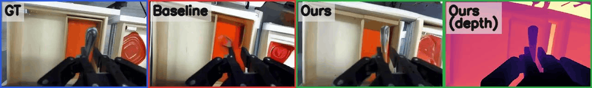
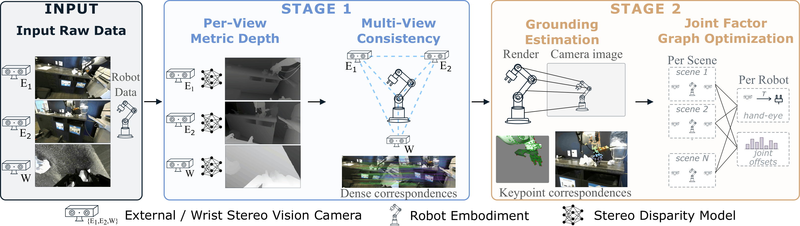
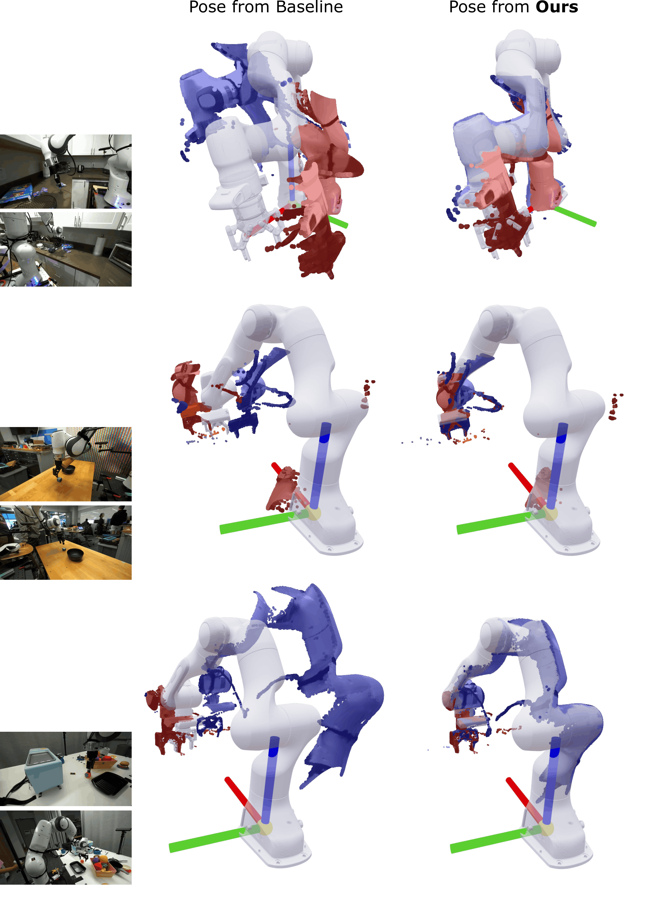
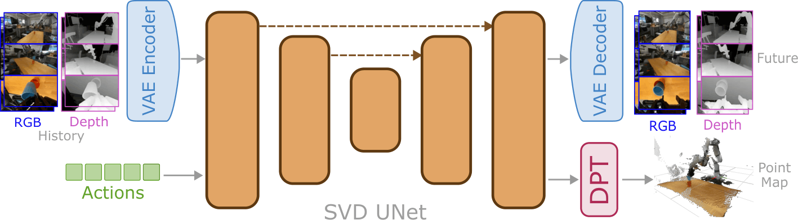
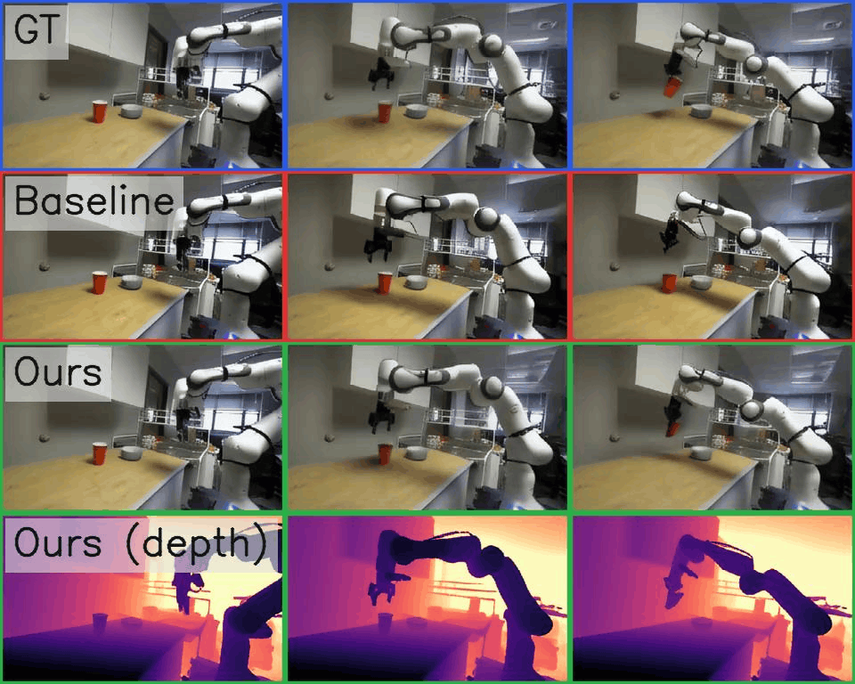
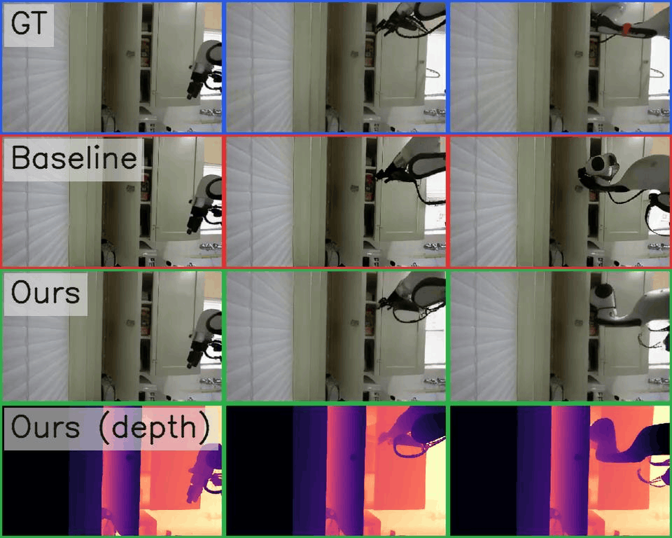

World models offer a data-driven alternative to traditional simulators for robotics, with applications spanning policy evaluation, improvement, and planning. All of these uses depend on faithful 3D geometry, yet current video-based world models are trained on RGB alone and produce rollouts that look correct frame-by-frame but do not compose into a consistent 3D world. Closing this gap requires progress on two fronts: large-scale 3D supervision for manipulation, and an architecture that can absorb it without disturbing strong pretrained video priors.
We introduce a calibration pipeline that combines learned stereo depth with a joint factor graph, pooling all episodes collected from the same physical robot to recover its shared kinematic parameters alongside per-scene extrinsics. Applied to the DROID dataset, this yields DROID-3D, a calibrated 3D dataset providing dense metric depth and recalibrated multi-view extrinsics (achieving < 0.7 px reprojection error on 90% of episodes for external cameras). We then train DepthWorld, a Stable Video Diffusion-based world model that jointly predicts multi-view RGB and depth via spatial latent tiling, leaving the pretrained VAE unchanged. Depth supervision improves RGB prediction itself by +1.48 dB PSNR over an identical RGB-only baseline at equal training budget, while simultaneously yielding accurate metric depth for downstream geometric reasoning.

The RGB-only baseline fails to maintain the shape of the cutlery, and the object disappears. DepthWorld capitalizes on the depth inputs to accurately maintain the cutlery's shape throughout the rollout while producing high-quality metric depth maps.
Action-conditioned video models have become a learned substitute for physics-based simulators, with rollouts increasingly used for policy evaluation, policy improvement, and planning — uses in which the geometric fidelity of the rollout determines whether the signal is usable. But current video world models are trained on RGB alone, and the training loss provides no signal to resolve the underlying 3D ambiguity of pixel sequences.
The result is rollouts that are visually plausible but geometrically incoherent: predicted depth disagrees across views of the same scene, the model struggles to reason about occlusion and contact, and object shape and identity degrade over the course of a rollout. The natural fix — supervise geometry directly during training — does not apply out of the box, for two reasons. First, robot teleoperation datasets capture appearance and dynamics at scale, but their geometric annotations are secondary outputs of the collection pipeline, far below the quality geometric pretraining demands. Second, current video world models rely on delicate pretrained diffusion priors; conventional ways of adding spatial modalities (VAE channel expansion, dual-branch U-Nets) require destructive re-initializations that corrupt those priors.
Our calibration pipeline takes any multi-view stereo teleoperation dataset with a known URDF and produces a calibrated RGB-D corpus in the robot's coordinate frame, in two stages.
Stage 1 — Initial multi-view calibration. Manipulation scenes are dominated by textureless tabletops and specular arms, where classical stereo SDKs fail. We recover per-view metric depth from each stereo pair with a learned global-matching network (S²M²), then enforce multi-view consistency through a robust two-pass bundle adjustment driven by dense RoMa-v2 correspondences.
Stage 2 — Robot-grounded joint optimization. We render the URDF into each external view to anchor the rig to the robot's physical base frame, then build a single factor graph spanning all episodes of a given robot. Pooling every episode lets us cleanly separate transient per-scene extrinsic noise from shared kinematic parameters (hand-eye correction and joint-encoder offsets), multiplying the correction signal for the latter by the number of episodes. A GPU-accelerated Levenberg–Marquardt solver exploits the sparse Schur structure, keeping wall time to roughly 12.5 minutes per robot group.
Applied to DROID's raw 71k-trajectory release, this yields DROID-3D: dense metric depth and recalibrated multi-view extrinsics across 71,100 episodes, 28 robots, and 13 labs.

DROID-3D calibration pipeline. Given raw stereo from two external cameras and a wrist-mounted camera together with the robot's URDF and joint encoder readings, Stage 1 recovers per-view metric depth and enforces multi-view consistency. Stage 2 renders the URDF into each external view to ground the rig to the robot frame, then forms a joint factor graph that pools all episodes of a robot to recover per-scene extrinsic corrections alongside shared kinematic parameters.
We evaluate calibration on ~1,000 scenes against a per-scene refinement baseline modeled on PointWorld (VGGT initialization + per-scene optimization, with S²M² substituted as the depth source to match ours). The gap is large on every axis, and our coupled optimization has no analogue to the baseline's ~18% per-scene convergence-failure rate.
| Metric | All scenes (n = 995) | PointWorld-converged subset (n = 815) | ||
|---|---|---|---|---|
| PointWorld | Ours | PointWorld | Ours | |
| Ext–ext reproj. median (px) ↓ | 5.84 | 0.25 | 5.67 | 0.25 |
| Wrist–ext reproj. median (px) ↓ | 13.19 | 1.03 | 12.52 | 1.02 |
| Robot depth median (mm) ↓ | 111.3 | 14.0 | 104.6 | 13.9 |
| Mask IoU mean ↑ | 0.440 | 0.810 | 0.458 | 0.819 |
Calibration quality on ~1,000 evaluation scenes. The right block restricts to the subset where the baseline's per-scene refinement converges; the gap persists.
Qualitative comparison of the recovered poses against the PointWorld-based baseline. We show only the points corresponding to segmented robot pixels, lifted into the robot base frame. In every case our method produces significantly more aligned poses — the average robot depth error is ~110–130 mm for the baseline versus ~15–20 mm for ours.

Pose estimation of the PointWorld-based baseline (left) vs. ours (right). The baseline's poses do not align with the robot, while ours do consistently.
DepthWorld consumes the dense metric depth and calibrated extrinsics of DROID-3D as a direct training signal, through two mechanisms that leave the pretrained backbone intact.
Spatial latent tiling. Rather than altering the U-Net, we exploit the SVD VAE's natural ability to encode depth as an image. Each view-modality tile (RGB and depth, for two external and one wrist camera) is encoded by the unmodified VAE and placed side-by-side in a wider latent grid — a single 72×80 joint latent per timestep. The only network change is extending the spatial position embeddings to cover the wider grid. The U-Net denoises the full grid as one tensor over an 11-frame window (6 history, 5 future) at 5 Hz.
Robot-frame point-map supervision. To make cross-view coherence explicit, a lightweight DPT point-map head (initialized from VGGT) lifts predicted future frames into the robot base frame and supervises them against unified 3D point maps, with a confidence-weighted robust loss. This acts as a fine-grained 3D regularizer on top of the cross-modality constraints the tiled latent already learns.

DepthWorld architecture. Multi-view RGB and depth are independently encoded into a spatially tiled latent grid (72×80) for joint U-Net denoising, preserving pretrained SVD priors. Predicted future latents pass through a DPT head to predict a 3D point map (X, Y, Z) and confidence in the robot base frame, supervised by a robust geometric loss.
We evaluate on 256 held-out DROID trajectories with 10 consecutive autoregressive rollouts, comparing the RGB-only Ctrl-World backbone against our joint model (RGB+D) and the variant that adds the point-map head (RGB+D PM-DPT). Adding depth as a joint prediction target through spatial latent tiling delivers a clear RGB gain at equal training budget: +1.48 dB PSNR on external views and +1.02 dB on wrist. The point-map loss further refines depth — especially on the challenging wrist view — while fully maintaining RGB quality.
| View | Model | PSNR ↑ | SSIM ↑ | LPIPS ↓ | AbsRel ↓ | RMSE ↓ | δ₁ ↑ |
|---|---|---|---|---|---|---|---|
| External | RGB | 22.63 | 0.8170 | 0.0930 | — | — | — |
| RGB+D | 24.09 | 0.8333 | 0.0889 | 0.0765 | 0.220 | 0.9432 | |
| RGB+D PM-DPT | 24.11 | 0.8333 | 0.0891 | 0.0782 | 0.219 | 0.9434 | |
| Wrist | RGB | 16.98 | 0.5737 | 0.3228 | — | — | — |
| RGB+D | 17.96 | 0.6106 | 0.3137 | 0.2230 | 0.150 | 0.8182 | |
| RGB+D PM-DPT | 18.00 | 0.6129 | 0.3131 | 0.2182 | 0.148 | 0.8210 |
World-model prediction quality on held-out trajectories. Depth metrics are against the depth obtained from DROID-3D. The RGB-only baseline does not predict depth (—).
Two rollouts by the baseline RGB model and DepthWorld, which also produces high-quality depth. In both cases the models start from an identical ground-truth first frame.

The RGB-only model fails to simulate the robot grasping the red cup; DepthWorld accurately simulates the interaction and produces an aligned depth map.

Without depth supervision, the RGB-only model cannot distinguish the open wardrobe door from a solid surface and simulates the arm colliding with it; DepthWorld correctly generates the arm moving inside the wardrobe.
If you find this work useful, please cite:
@inproceedings{bardhan2026depthworld,
title = {DepthWorld: 3D World Model for Robot Manipulation},
author = {Bardhan, Jai and \v{S}ivic, Josef and Petr\'{i}k, Vladim\'{i}r},
booktitle = {ArXiv Preprint},
year = {2026}
}